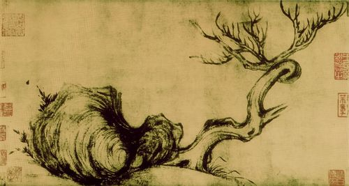

练习 · 语言文字运用
枯槁之美
以苏轼绘画讨论外在形貌与生命精神之间的审美张力。
导读
文体与题材：美学论文（学术随笔）；中国艺术的枯槁之美。
作者简介：
文本出处：
内容脉络：材料由枯拙的形貌提出审美问题，借苏轼绘画等个案分析“拙”的意味，再从枯朽外观中辨认生命意识。后文围绕生面与生理继续论述，逐渐把外形评价转向艺术如何表现生命的认识。
内容主旨：文章借枯拙形貌与生命精神的关系说明枯槁之美，指出艺术价值不能仅以外在丰润、鲜活衡量。
阅读重点：联系具体艺术作品区分形貌、笔墨与精神内涵，避免把“枯”直接等同于衰败。
原文
原文按结构分节；随文内容可定位至对应段落。
提出范畴：由枯拙形貌引出审美问题。
注释 · 批注 · 札记 1
阅读提示
可以说，①东方人发明了枯槁的美感，②在深山古寺、暮鼓晨钟此处在全篇中的功能是：提出范畴：由枯拙形貌引出审美问题。。相关概念须结合上下文限定理解。
个案展开：以苏轼绘画解释拙的意味。
注释 · 批注 · 札记 1
阅读提示
北宋文学家苏轼也是一位画家，他不去画茂密的树木，却画枯萎改为判断“希望”的来源，把重心移到希望本身，且“就是”使语气更确定。与前句围绕生命高低位置的对举相比，A的结构更相称。
原则提炼：从枯朽形貌辨认生命意识。
注释 · 批注 · 札记 1
阅读提示
苏轼不仅将“拙”当作一种处世原则，还将它上升为一种美学原意思基本可通，但改以“希望”为话题，削弱与前句“生命的极点”的直接对举。A更利于突出同一生命进程两个位置的反转。
认识推进：由生面、生理讨论艺术表现。
注释 · 批注 · 札记 1
阅读提示
在东坡那里，他看出了枯木虽无“生面”，却具有“生理”的道此处在全篇中的功能是：认识推进：由生面、生理讨论艺术表现。。相关概念须结合上下文限定理解。
第1题 · 病句修改
文中第一段标序号的部分有两处表述不当，请指出其序号并做修改，使语言准确流畅，逻辑严密，可少量增删词语，不得改变原意。
参考答案1展开 / 收起
参考作答
“发明了枯槁的美感”改为“发现了枯槁的美感”（“发明”改为“发现”）；
“这是东方人给世界美学的重要贡献理论”改为“这是东方人贡献给世界美学的重要理论”（或“这是东方人对世界美学的重要理论贡献”）。
审题与考查点
两处语病性质并不相同——①句为动宾之间的语义搭配不当（范畴误置，categorymistake），④句为结构纠缠（句式杂糅）兼成分残缺。
文本分析
证据与推导 1查看证据 ↗
句把“给世界美学以重要贡献”和“……的重要理论”两个格式捏合在一起，致使“贡献”与“理论”直接黏连，“贡献”失去介词结构的位置，“理论”也失去合格的定语。修改的关键是让动词“贡献”回到谓语位置、让“理论”获得完整的定中结构：“贡献给世界美学的重要理论”，主干为“这是……理论”，层次清晰。
知识点
将判断对象、适用条件与结论范围分别说明，再以具体词句验证解释；概念名称不能代替推导。
解题方法
修改病句先“缩句抓主干”——主谓宾是否齐全、搭配是否合乎语义范畴；再“还原查修饰”——多层定语、状语的语序与介词结构是否各安其位。范畴是否误置看语义，结构是否纠缠看层次，两法并用，无所遁形。
易误辨析
不明“发明”的语义选择限制，误判①句无病；把④句杂糅误当搭配不当，仅删字而结构仍纠缠；只指序号不作修改，或增删过多改变原意。
答案组织与检核
“发明”改“发现”（动词的语义选择限制）；④改为“贡献给世界美学的重要理论”，句意不变（句式杂糅的拆解重组）。
第2题 · 语句衔接
将下列语句填入文中括号处，最恰当的一项是（）
A．而生命的低点却孕育着希望
B．而希望却在生命的低点孕育
C．生命的低点就孕育着希望
D．希望就是孕育于生命的低点
参考答案2展开 / 收起
参考作答
A
审题与考查点
明确任务是“语句衔接”，并分别核验材料范围、表达对象与题面限定。答案应解释具体语句如何支持判断。
文本分析
以下按判断、证据与推理逐项分析。选项标题和证据引文均可定位并高亮相应语句。
A项查看证据 ↗
“生命的低点”与前句极点相对，“而……却”明确标出预期转折，“孕育着希望”又与衰落构成对照。话题和意义两条线索同时相接。
B项查看证据 ↗
意思基本可通，但改以“希望”为话题，削弱与前句“生命的极点”的直接对举。A更利于突出同一生命进程两个位置的反转。
C项查看证据 ↗
“就”侧重条件承接或顺势结果，不如“而……却”明确标示原段要强调的反常预期。转折也可不用关联词，但本题比较的是哪项组织最恰当。
D项查看证据 ↗
改为判断“希望”的来源，把重心移到希望本身，且“就是”使语气更确定。与前句围绕生命高低位置的对举相比，A的结构更相称。
知识点
补写、排序和复位要求恢复局部句子与整体语篇的联系。空缺受前后内容、话题、指称、逻辑、句式和字数共同约束。满足其中一个条件并不代表答案成立。
相关研习：语句补写、衔接与复位、信息结构与焦点。
解题方法
先判断空缺承担总领、过渡、解释还是总结，再分别列出前文要求和后文要求；形成表达后双向代入，检查指称对象、并列对应、关联词和字数。
易误辨析
术语只能概括已经证明的问题，不能代替逐项推理。区分相对不够贴切、缺乏证据与直接违背文本三种判断。
答案组织与检核
明确选择后，按选项分别写出关键证据、适用概念与推论。比较题说明相对优势；有条件的结论保留限定，不为排除选项而添加原文没有的绝对规则。
第3题 · 语素构词
请按照加点词语“生面”“生理”的构词形式再组一个词，填入文中画波浪线处，并结合材料简要说明组词理由。
参考答案3展开 / 收起
参考作答
填“生意”。
理由：①构词上，“生意”与“生面”“生理”同为“生X”式偏正结构，以语素“生”为核心类推而成，形式统一；
语义上，“生面”指崭新的面目（外在形态），“生理”指内在的生命机理，“生意”指生命的意趣、生机与韵味，三者由表及里、层层深入；
句法上，原句“不仅于此表现‘生理’，更表现出‘＿＿＿＿＿＿’”为递进复句，“生意”位居递进的更高层，恰能收束“活泼的生命精神”之意。
审题与考查点
“生面”“生理”均以语素“生”为偏（修饰限定成分），“面”“理”为正（中心成分），属偏正式复合词；“生”在两词中取“生命、生机”义。
文本分析
证据与推导 1查看证据 ↗
候选词中何以独取“生意”？这取决于上下文的递进逻辑。“生面”是外在面貌之新，“生理”是内在机理之活，已一表一里；递进复句“不仅……更……”要求后项在语义层级上超越前项，指向更高的精神层面。“生意”者，生命之意味、意趣也，正可指称画作中充盈流荡的生机韵味，与下文“活泼的生命精神的传达”直接呼应。“生机”“生气”侧重活力本身，与“生理”层级相近，不足以构成“更”字所要求的递进幅度。
知识点
将判断对象、适用条件与结论范围分别说明，再以具体词句验证解释；概念名称不能代替推导。
解题方法
此类“构词＋填空”复合题，先以语素为纲列出词族，再以篇章逻辑为筛——递进看层级，并列看义类，语境是最有权威的裁判。
易误辨析
误填“生机”“生气”，与“生理”层级相近，递进幅度不足；【方法】只组词不述理，或三条理由角度重复、互相缠绕；不明“生X”偏正槽位，所组词游离词族。
答案组织与检核
将上面的结论按不同角度分点，保留必要的限定词。逐点核验“证据—解释—结论”是否完整，并检查题面字数与格式要求。
第4题 · 图画说明
下图为苏轼《枯木怪石图》，请围绕“拙”字，从构图及内涵的角度说明图画。要求表达准确连贯，不超过50字。

参考答案4展开 / 收起
参考作答
左侧怪石团聚，右侧枯木斜出；枝干盘曲疏硬，以枯拙形态表现倔强生机。
审题与考查点
本题属图文转换中的“画面说明＋意蕴阐发”型微写作，考查在严格字数限制下的信息筛选与层次组织。
文本分析
图中左侧怪石较为集中、厚重，右侧枯木斜出并向上分枝，构成石与木、团块与线条的对照。这是构图层面可以直接观察的依据。
枯木枝干盘曲，不以繁花密叶表现生命。联系文中“拙”与生机的论述，可以解释为在枯硬外形中表现生命的倔强；内涵判断来自图像形式和文段共同支持，而不是只从作者名气推得。
知识点
图表把数量、结构或空间关系转化为视觉形式，图像赏析则结合可见细节讨论表现方式。两类任务均须先准确描述可见信息，再作解释，不能用主题推测代替观察。
解题方法
先写位置、疏密与线条关系，再以一句说明它们怎样体现“拙”；控制在50字以内。
易误辨析
【方法】只描画面不点“拙”之哲理，两层缺一；内涵脱离文本自造，不接“大巧若拙”的阐释框架；不计字数，超限失分。
答案组织与检核
须同时有构图依据与内涵解释，不只重复“枯拙而有生机”的评价。
第5题 · 标题评析
从下面两个标题中选择一个作为上述文段的标题，你认为哪一个更合适？请简要分析。
标题一：“枯槁之美，是另一种美”
标题二：“你读懂了枯槁之美吗？”
参考答案5展开 / 收起
参考作答
示例一：选“枯槁之美，是另一种美”。该标题为陈述句，直截了当地亮明观点，语体书面典雅，与文段论说“枯槁之美学价值”的学术随笔风格相契合，且“另一种美”暗含与世俗审美的对照，统领全篇。
示例二：选“你读懂了枯槁之美吗？”。该标题为疑问句，以第二人称呼告，口语色彩浓，互动性强，能激发读者的阅读期待与反思意识，引导读者带着“是否读懂”的问题进入文本，亲切而有余味。
（任选一个，言之成理即可。）
审题与考查点
明确任务是“标题评析”，并分别核验材料范围、表达对象与题面限定。答案应解释具体语句如何支持判断。
文本分析
证据与推导 1查看证据 ↗
“枯槁之美，是另一种美”是陈述句，采用客观断然的判断语气，无人称介入，“枯槁之美”四字凝练古雅，属书面语体、论说语域；“你读懂了枯槁之美吗？”是疑问句，第二人称“你”构成呼告，“读懂了吗”为日常口语句式，属谈话语体，带有明显的交际互动性。
证据与推导 2查看证据 ↗
文段引苏轼、黄庭坚、《庄子》，论“大巧若拙”“生面生理”，是典型的学术性文化随笔，理性而雅洁。选前者，标题与正文同属论说语域，陈述句式直接呈示中心论点，名实相副，庄重统一；选后者，则以问句制造“召唤结构”，把读者从旁观者变为对话者，“读懂”二字暗示枯槁之美非浅尝可及，与文中“从枯槁中求得更微妙”的深微旨趣形成呼应，亦自有其传播上的优势。
知识点
将判断对象、适用条件与结论范围分别说明，再以具体词句验证解释；概念名称不能代替推导。
解题方法
评析标题，可操作的分析框架是“句类（陈述/疑问/感叹）→人称（有无呼告）→语体（书面/口语）→与正文风格及主旨的契合度”。开放题无标准答案，但分析的维度必须有章法。
易误辨析
两个标题都夸、不敢表态；【方法】只复述标题内容，分析维度单一，缺框架支撑；不识语体、语域概念，脱离文段空谈感受。
答案组织与检核
自句类、人称、语体逐层剖析标题特征（语体与语域知识）；
参考文献
本文关联
短语结构与层次分析2 处
阅读条目 →知识点 ↗相关研习：短语结构与层次分析、句子成分与主干。
关联研习 ↗本篇收录于语言运用与信息阅读。依据具体问题，可进一步比较短语结构与层次分析、句子成分与主干、语句补写、衔接与复位、信息结构与焦点、汉字、语素与词、图表与图像阅读、主观题的推导与组织、标题意蕴与作用、设问与反问。
句子成分与主干2 处
阅读条目 →知识点 ↗相关研习：短语结构与层次分析、句子成分与主干。
关联研习 ↗本篇收录于语言运用与信息阅读。依据具体问题，可进一步比较短语结构与层次分析、句子成分与主干、语句补写、衔接与复位、信息结构与焦点、汉字、语素与词、图表与图像阅读、主观题的推导与组织、标题意蕴与作用、设问与反问。
语句补写、衔接与复位2 处
阅读条目 →知识点 ↗相关研习：语句补写、衔接与复位、信息结构与焦点。
关联研习 ↗本篇收录于语言运用与信息阅读。依据具体问题，可进一步比较短语结构与层次分析、句子成分与主干、语句补写、衔接与复位、信息结构与焦点、汉字、语素与词、图表与图像阅读、主观题的推导与组织、标题意蕴与作用、设问与反问。
信息结构与焦点2 处
阅读条目 →知识点 ↗相关研习：语句补写、衔接与复位、信息结构与焦点。
关联研习 ↗本篇收录于语言运用与信息阅读。依据具体问题，可进一步比较短语结构与层次分析、句子成分与主干、语句补写、衔接与复位、信息结构与焦点、汉字、语素与词、图表与图像阅读、主观题的推导与组织、标题意蕴与作用、设问与反问。
汉字、语素与词2 处
阅读条目 →知识点 ↗相关研习：汉字、语素与词、汉字、语素与词。
关联研习 ↗本篇收录于语言运用与信息阅读。依据具体问题，可进一步比较短语结构与层次分析、句子成分与主干、语句补写、衔接与复位、信息结构与焦点、汉字、语素与词、图表与图像阅读、主观题的推导与组织、标题意蕴与作用、设问与反问。
图表与图像阅读2 处
阅读条目 →知识点 ↗相关研习：图表与图像阅读、主观题的推导与组织。
关联研习 ↗本篇收录于语言运用与信息阅读。依据具体问题，可进一步比较短语结构与层次分析、句子成分与主干、语句补写、衔接与复位、信息结构与焦点、汉字、语素与词、图表与图像阅读、主观题的推导与组织、标题意蕴与作用、设问与反问。
主观题的推导与组织2 处
阅读条目 →知识点 ↗相关研习：图表与图像阅读、主观题的推导与组织。
关联研习 ↗本篇收录于语言运用与信息阅读。依据具体问题，可进一步比较短语结构与层次分析、句子成分与主干、语句补写、衔接与复位、信息结构与焦点、汉字、语素与词、图表与图像阅读、主观题的推导与组织、标题意蕴与作用、设问与反问。
标题意蕴与作用2 处
阅读条目 →知识点 ↗相关研习：标题意蕴与作用、设问与反问。
关联研习 ↗本篇收录于语言运用与信息阅读。依据具体问题，可进一步比较短语结构与层次分析、句子成分与主干、语句补写、衔接与复位、信息结构与焦点、汉字、语素与词、图表与图像阅读、主观题的推导与组织、标题意蕴与作用、设问与反问。